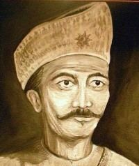
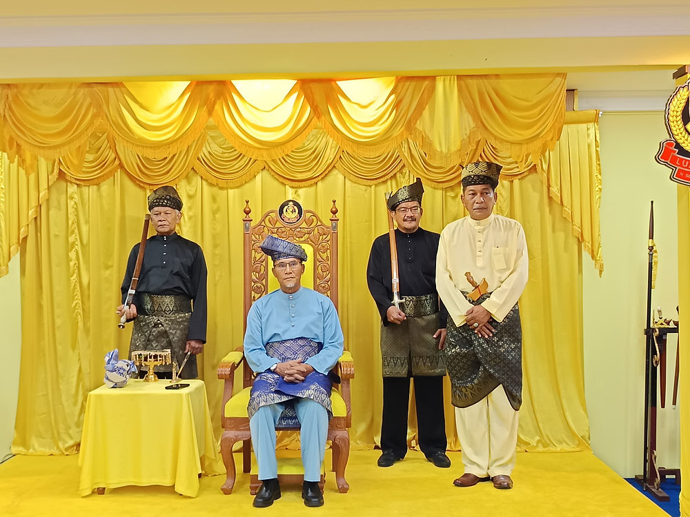
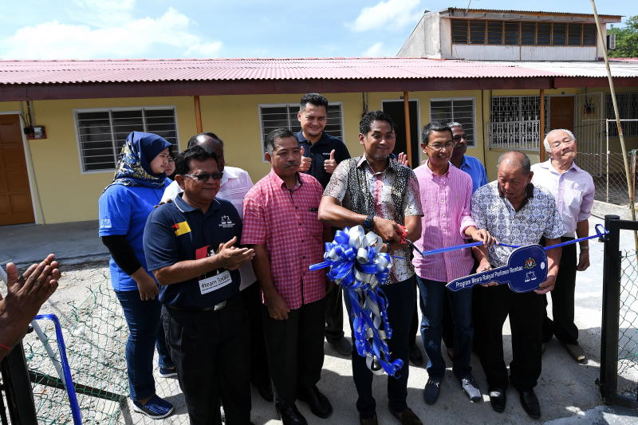

“People of Rembau” is a community-focused platform that highlights the culture, lifestyle and stories of the people in Rembau, Negeri Sembilan. It showcases local traditions, achievements and everyday life. Preserving the unique identity and heritage of the Rembau community.”
Meet the families, elders and local leaders who keep the spirit of Rembau alive.


